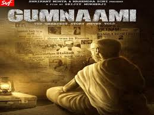
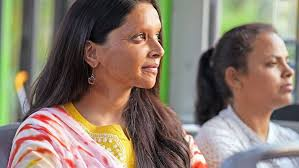
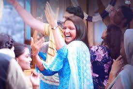
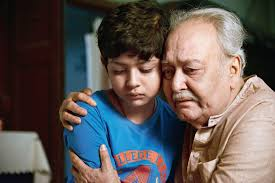
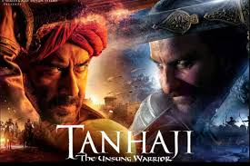
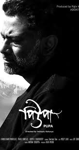
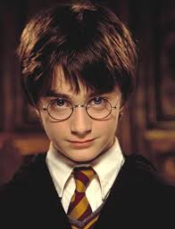
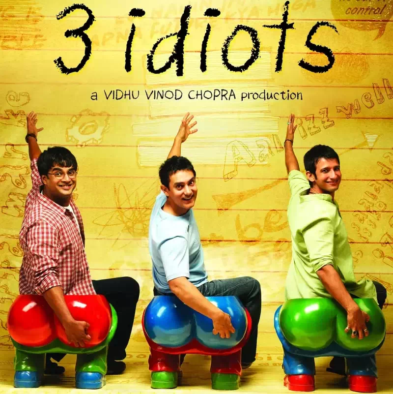

MOVIE REVIEWS
Dark mode:
OFF
MOVIES LIST

GUMNAAMI: A thriller, directed by Srijit Mukherjee, involving the disappearence of the greatest Indian hero of
all times,
Netaji Subhash Chandra Bose.Did he really die in the plane crash? Or is there something more to it? The film
unearths the
mystery related to the disappearence,including hearings of the Mukherjee Commission (1999-2005).The film potrays
Netaji's disappearence
in the rumoured plane crash and also his apparence in Russia and again returning back to India as "Gumnaami
Baba". The
protagonist, Chandrachur Dhar(played by Anirban Bhattacharyya)helps us unearth the mystery of Netaji's
disappearence,
showing strong evidence of the plane crash being false,

Netaji's presence as Gumnaami Baba in India. He faces
debates, but
still keeps down his points in the hearing with justified proofs, involving comments of people, who had met
Netaji
durig his stay as Gumnaami Baba.
The film keeps you glued to the screen with its every twist and turn, as the movie unfolds to dicover the
truth. Prosenjit Chatterjee playing in the role of Netaji Subhash Chandra Bose, is trully praise-worthy. IMDb
rates it
7.8 out of 10.
My ratings: 9.5 out of 10

CHHAPAAK: A film , revealing before our eyes, the dangerous impacts of acid-attacks on women and making us aware
of it.
When Malti becomes the victim of acid attack, then, inspite of her shouts, very gfew people came to rescue her
at that
moment . And why she gets attacked ? Just because she didn't pay heed to a boy, who was constantly disturbing
her. 
She fails to gets justice at first, but that does not suppress her.This film is directed by Meghna Gukzar and is
based
on the life of Laxmi Agarwal. watch the film to know- did Malti really get justice at the end ? What happened to
Malti ?
There is a true saying that "all heroes don't wear capes"- Malti is such a hero, who inspires women all around
the world.
The film keeps you glued to the screen with its every twist and turn, as the movie unfolds to dicover the
ultimate results.IMDb rates it 5 out of 10. The film is a must watch.
My ratings: 9 out of 10

BORUNBABUR BONDHU: A sweet film, directed by Anik Dutta, revolving around the life of Borunbabu (Soumitra
Chatterjee)
,an old person, but strong in the very root iof his ideals. He is stubborn and vary adept in litereature.The
closest persons
of his life were his grandson, his wife and his childhood friend.He is usually ignored by his family memebers.
The, suddenly,
he lost his wife and becomes all alone. All of a sudden, a news arrives that his closest childhood friend has
been elected as
the President of India and is willing to vist him in his hometown.But Borunbabu, who was not so much in good
terms with his
childhood friend, tries not
to pay so much
attention to it. But, meanwhile,hearing the news of the upcoming arrival of the President in Borunbabu's house,
all of a sudden,
Borunbabu bacomes a very important man in the society as well as in his family. Did the President really come to
visit him ? What
happened after that ? What did really happen between Borunbabu and the President ?
The film keeps you glued to the screen with its every twist and turn, as the movie unfolds to dicover the
incidents .IMDb rates it 8.5 out of 10.
My ratings: 9 out of 10

TANHAJI:THE UNSUNG WARRIOR: Story of a valiant Marathi soldier, as he fought bravely against the Mughals to save
his motherland from the
foreigners. The first part of the film shows young Tanhaji with his father and how his father helped shaping his
ideals. The second part
Tanhaji as a true warrior, under the true guidance of Chatrapati Shivaji.
The film is directed by Om Raut. The VFX used in the film are amazing. The film is also available in many
different languages and also in 2D
and 3D.
The film keeps you glued to the screen with its every twist and turn, as the movie unfolds to dicover the
valiant adventures and war-tactics of Tanhaji. IMDb rates it 7.9 out of 10.
My ratings: 8 out of 10

PUPA: A bengali art film, directed by Indrasis Acharya,that has won the hearts of several Bengalees through its
simple storyline. The story
focuses on Subhro and how he faces struggles, when his father becomes ill. He faces the whole family-burden,
depression, work-pressure, peer-
pressure,everything.His father appears like a burden to him during his illness, but can't speak out the blatant
truth. The person who solves
the problem, yet bitterly will be Subhro's uncle but how ?

But
what will happen to Shubro and his family ? Did his father survive?
The film keeps you glued to the screen with its every twist and turn, as the movie unfolds to dicover the
real reasons amd also how Subhro overcomes his struggles.IMDb rates it 7.8 out of 10.
My ratings: 8.5 out of 10

HARRY POTTER SERIES:The hero of the magical world of Hogwarts, created by J.K.Rowling, Harry Potter, along with
his friends Hermoine Granger,
Ronald Weasely, defeat the Dark Lord in the whole movie series. The film starts with Dumbledore's iconic lines
"I should have known that
you would be here... Professor McGonagall., while delivering young Harry to the footsteps of her
muggle(non-witch) aunt Petunia's house aunt at
Privet Drive. Thus begins the life of Harry Potter, under the unloving attitude of her aunt's family, knowing
that his parents dies in a car
accident, not knowing the real truth, until Hagrid,

the gamekeeper of Hogwarts School of Witchcraft and
Wizardry, reveals to Harry the real truth.
He also tells harry that he is a wizard and from there, step by step, incident by incident, begins Harry's
magical life at Hogwarts. He faces the
Dark Lord Voldemort, but defeats him everytime,commencing step by step to the Second Battle of Hogwarts. What
did happen at the end? Did harry
win at the end ? Who killed Harry's parents and why ? To find out, you have to watch the movies of the series.
My rating: 9.5 out of 10

The Shawshank
Redemption:It is a strange comment to make about a film set inside a prison, but "The Shawshank
Redemption" creates a warm hold on our feelings because it makes us a member of a family. Many movies offer us
vicarious experiences and quick, superficial emotions. "Shawshank" slows down and looks. It uses the narrator's
calm, observant voice to include us in the story of men who have formed a community behind bars. It is deeper
than most films; about continuity in a lifetime, based on friendship and hope.

Roger Deakins' cinematography is tactful, not showy.
Two
opening shots, one from a helicopter, one of prison walls looming overhead, establish the prison. Shots follow
the dialogue instead of anticipating it. Thomas Newman's music enhances rather than informs, and there is a
subtle touch in the way deep bass rumblings during the early murder are reprised when a young prisoner recalls
another man's description of the crime.

Three Idiots: Rancho, Raju and Farhan enter the elite engineering college, only to learn lessons of life that cannot be taught through books and classrooms.
Principal Viru Sahastrabuddhe is no help at all.
3 Idiots is a coming-age comedy and inspirational film directed by Rajkumar
Hirani. The story of the film is similar to that of the famous novel Five Point
Someone by Chetan Bhagat. This film is based on our Indian educational system
which pressurizes the students and has an obsession for high grades. Aamir Khan
as Rancho plays the role of a very bright student who motivates his friends pursue
their passion and make a career out of it. R.Madhavan as Farhan who wants to
become a wildlife photographer but was forced to pursue engineering because of
his strict father.
Sharman Joshi as Raju who is pursuing engineering with the goal of getting his
family out of extreme poverty. Boman Irani as virus who plays the role of a strict
college director who is highly competitive. Kareena Kapoor as Pia who plays the
role of virus’s daughter and falls in love with Aamir khan . The film goes very
smooth. The film’s first half includes ragging scene, confrontations with the
professor, Chatur’s speech and mournful meal at Raju’s home. Overall the film
depicts a very nice mingle of comedy, suspense and motivational. All the actors
and co-actors done a commendable job. The music of the film was very soothing.
The back ground music supports the film all through the movie. Overall dipiction
is fine. Some of the scenes are really emotional. Overall rating is excellent.Its
definitely a one time watch